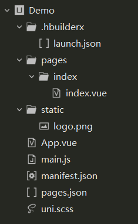
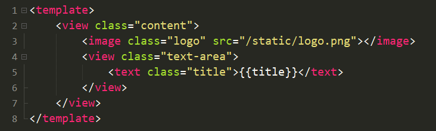
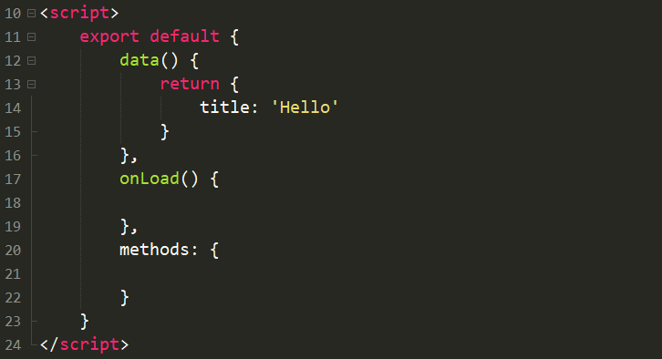
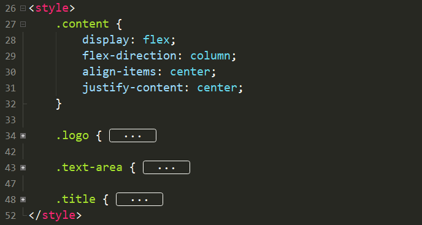
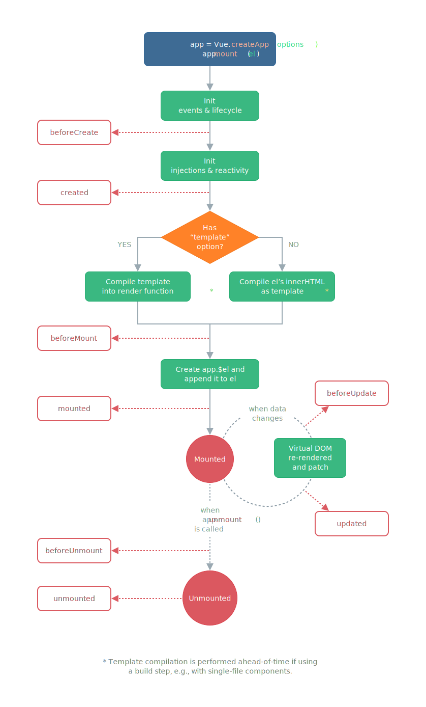

Uni-app 及 Vue.js 的结构
1. Uni-app 项目结构
这是我们刚刚创建的 Uni-app 项目 :

.hbuilderx是 IDE 自己的生成的启动文件，主要用于修改及定义启动项目的具体类型和方式pages用于存放 Uni-app 的网页文件，你所有的 主页面（不包括导航栏设置）以及 组件 （我们下一节课会涉及）都应按各自职能放在 pages 下的不同文件夹内static用于存放 uni-app 的网页静态文件，包括但不限于 图片 ， 音乐 ， 测试数据包 等 非动态文件，亦可理解为 resource 文件App.vueVue 项目的入口文件，管理页面的切换，因而可用于定义所有页面中共同需要的动画或者样式main.jsUni-app 项目的入口文件，主要用于初始化 Vue实例 ，定义全局组件manifest.json管理 app 的基础配置，包括但不限于 图标 ， 界面 ， 模块 及 权限 配置 等pages.json用于对 uni-app 进行全局配置，决定页面文件的路径 ，窗口样式 ，原生的导航栏 ，底部的原生tabbar 等uni.scss定义 uni-app 内置的常用样式变量
2. Vue 框架结构
以我们刚刚创建的 Demo/pages/index/index.vue 为例，Vue 文件多由三部分组成
-
<template>→ HTML内容模板元素
- 可以暂时理解为页面文件，类似 HTML；
<template>内部有且只能有一个 Root 元素，可以是<view>...</view>也可以是<div>...</div>- 在 Vue 框架下不推荐直接操作 DOM ，因为 高耦合 + 不可预测 + 低性能
<script>→ JS

- 在
data() { ... }中定义了该组件的属性- 为什么是个函数 : 因为在渲染过程中生成的是 Vue 实例，因而每个属性都需要是新生成的属性，而不是所有模块共用一套属性；
data() { ... }中this指向当前实例
- Vue 的每个模块都有自己的 生命周期 ， 我们会在之后讨论
- 在
methods: { ... }中可以加入自定义的 JS 函数 <style>→ CSS

- 类似 CSS，再次略过不做赘述
3. Vue 实例的生命周期
每个 Vue 应用都是通过用 createApp 函数创建一个新的应用实例开始的，而每一个实例被创建时都要经过一系列的初始化过程。同时在这个过程中也会运行一些叫做生命周期钩子的函数，这给了用户在不同阶段添加自己的代码的机会 ：

- beforeCreated
- created
- beforeMount
- mounted
- updated
- activated
- deactivated
- beforeUnmount
- unmounted
- errorCaptured
- renderTracked
- renderTriggered
E.g. Created
Vue.createApp({
data() {
return { count: 1}
},
created() {
// `this` 指向 vm 实例
console.log('count is: ' + this.count) // => "count is: 1"
}
})
- 生命周期钩子的
this指向调用它的当前活动实例，因此你可以访问当前实例下的data，computed和methods； - 不同生命周期钩子调用时实例处于不同状态，如
created数据侦听、计算属性、方法、事件/侦听器的回调函数已被配置完毕。然而，挂载阶段还没开始，且$el property目前尚不可用； -
更多详见
By KobeNorris